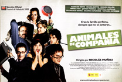

Animales de compañía
Martina llega con un regalo de rosas para Rafa, su marido, que ese día cumple 65 años, y que se afana en la cocina preparando una sopa de pescado que según su mujer huele fatal.
Martina le recrimina que no llame a Sofía, su hija y él dice que ya se lo dijeron el domingo anterior, y que seguro que llegará tarde como siempre.
Pero contra todo pronóstico, es la primera en llegar, llevando con ella a Gregorio, que dice la fue a buscar al ensayo y lo invitó a ir con ella.
Les cuenta que está pasando unos días en su casa ya que le echaron de la suya.
Gregorio, que es crítico de arte muestra su desprecio por las fotos que ve en la casa hasta que se entera de que son de la madre de Sofía, metiendo de nuevo la pata al criticar las extrañas sillas de la casa hasta que se entera de que son diseño del padre, sentándose en una de ellas, en la que debe estar casi tumbado se presenta Rafa, su creador ante él asegurándole que para que le sirva de algo debe estar en ella al menos media hora, por lo que lo encuentran así los siguientes en llegar, Esther, la mayor, acompañada de Ernesto, su marido, presentador de telediario.
Ellos les informan de que han visto a su hermano, Javier encadenado a la peletería de un centro comercial.
Cuando Gregorio comienza a hablar sobre Irak y el destrozo generado por la guerra Esther hace sonar una campanita explicándole que en su casa llegaron al acuerdo de que nunca se habla de política y de que cuando alguien lo hace tocan la campanita, pues no desean discutir.
Rafa cada día está más cascarrabias, y por eso critica el regalo de Esther, una colonia distinta a la que él usa normalmente.
Su mujer le regala una fotografía enmarcada de ella desnuda, explicando que ha decidido volver a fotografiar desnudos - lo que previamente criticó Gregorio ante Sofía -, alternándolo con fotos de edificios en construcción.
Cuando Rafa le pregunta a Gregorio si es del mundo del teatro, este le responde que es crítico, dándose cuenta entonces Martina de que fue la persona que hizo unas críticas más feroces sobre su fotografía, lo que les incomoda pese a que él se disculpa.
Tanto Rafa como Esther piensan que Sofía disfruta fastidiándolos e incomodándolos.
Martina le devuelve a Ernesto un dinero que les prestó, lamentándose de que Rafa siga intentando vender sillas que nadie compraría.
Finalmente se sientan a la mesa, en sillas diseñadas por Rafa, harto de esperar a Javier, aunque solo él, Gregorio y Esther toman su sopa.
Llega entonces Javier, con varias heridas, aunque insiste en que no le pasa nada.
Javier comienza a discutir con Ernesto sobre la matanza de animales y sobre si es lo mismo matar para comer o para adornarse, debiendo hacer sonar Martina la campana.
Hablan del proceso de adopción que han iniciado Ernesto y Esther, yendo al día siguiente la psicóloga que ha de evaluarlos.
Surge una nueva discusión en la que Javier dice que no se trata de adoptar a un niño para conseguir paliar el hambre en el mundo, sino como si fuera una mascota.
Esther acaba cansada de tanta crítica y empieza a criticar a sus hermanos. Ella piensa que trata de llegar siempre conciliadora y sus hermanos se burlan de ella, llegan tarde o invitan al primero que encuentran, en alusión a Gregorio, que se ha pasado toda la cena haciendo comentarios sarcásticos.
Javier pide perdón, aunque ella no se lo admite. Le pide que piense antes de decir algo ofensivo, a lo que él responde que lo que ha dicho es lo que piensa, apoyándolo Sofía, que indica que cada uno debe decir lo que piensa y que, si los demás no están de acuerdo deben rebatirlo con argumentos en vez de ofenderse.
Sofía echa en cara además a su hermana que esté disfrutando de un piso de la familia, y cuando esta alega que le paga el alquiler a su padre, ella se ofrece a pagar esos 300 Euros, diciendo que ellos arreglaron el piso.
Al iniciarse la discusión Rafa y Martina acaban marchándose de la mesa, dedicándose él a limpiar el fondo de su piscina pese a estar en febrero. Mientras lo hacen hablan de la foto que ella le regaló pese a que sabía que eso le molestaría a él.
Entretanto Gregorio comienza a sentirse mal y debe ir a tumbarse, tomándose un orfidal.
Sofía le cuenta a su hermano que está embarazada de Gregorio, y le dice que sin siquiera lo sabe él, y se lamenta de que para sus padres todo lo que hace les parece una provocación, sintiéndose culpable incluso por estar embarazada, porque puedan llegar a pensar que se trata de una provocación hacia Esther por no poder tenerlos.
Rafa empieza a quejarse de que le ha sentado mal la sopa.
Finalmente se reúnen para la tarta, y cuando alguien sugiere invitar a Luci, la empleada del hogar, comienza una nueva discusión en la que Javier habla de explotación mientras Esther carga contra los inmigrantes que quitan el trabajo a los españoles que no pueden competir con sus sueldos, enviando todo su dinero a sus países.
Acaban bailando los dos matrimonios y Sofía con Javier y haciéndose una fotografía, aunque cuando está a punto de salir la foto les distraen los gritos de Gregorio que baja asustado ya que la serpiente se escapó.
Todos se asustan, ya que es muy venenosa, pese a que Sofía había ocultado ese dato hasta entonces.
Rafa se queja de que Sofía siempre esté provocándolo y de que Martina siempre la defienda, ante lo que esta dice que no tendría que hacerlo si él no estuviese siempre atacándola, y que si ella actúa así es para llamar la atención, y que si le dedicases solo la mitad de tiempo que a Esther no necesitaría hacerlo.
Bajando las escaleras Gregorio se cae y empieza a quejarse de la columna.
Entonces llaman a la puerta y llega la asistente social encargada de tramitar los papeles de adopción de Esther y Ernesto para la acogida de un niño indio, que les indica que hay una niña de 8 meses lista para ser adoptada y se puede adelantar el proceso, que se podría acortar hasta 4 0 5 semanas, por lo que piensa que puede aprovechar la ocasión para hablar con la familia.
Debido a la búsqueda de la serpiente está todo patas arriba, debiendo ir a buscar a Esther al garaje, donde se encuentra metida en el coche por temor a la picadura de la serpiente, quedándose encerrados en el garaje al desconocer el código para salir y entrar en casa.
Mientras espera a la pareja, la asistenta social escucha la confesión de Sofía a Gregorio de que está embarazada y la bronca posterior entre ellos cuando Gregorio al enterarse de ello le dice que aborrece a los niños y le pide a ella que aborte.
Aparecen tras ello Esther y Ernesto tras lograr salir del garaje, pidiéndoles Lourdes, la asistente que bajen sus padres para hablar con ellos.
Tratan de mostrarse como unos buenos padres, cuando de pronto aparece Gregorio anunciando que Sofía se ha encerrado en su cuarto y afirma haberse tomado una caja entera de orfidales.
Mientras su madre trata de hablar con ella se escucha el grito de Lourdes al ver a la serpiente, luego esta se cuela en el fregaplatos, que Rafa cierra y pone en funcionamiento para matarla.
Aparece entonces Sofía, y ante su empeño de salvar al animal su padre le da una bofetada, confesándoles entonces ella que está embarazada.
Mientras discuten en la cocina, en el salón la asistente social decide marcharse y olvidar el asunto, emplazándoles a seguir los trámites ordinarios para la adopción.
Seguirá la discusión en el salón con Sofía asegurando que abortará para no tener a un hijo que lleve los genes de su familia, ante lo que Rafa dice que no quiere verla más.
Cuando Martina trata de mediar Rafa también salta contra ella afirmando estar harto de sus fotografías, que nada le importan, recriminándole ella, tras romper la fotografía que le regaló, que nunca la ayudó en su carrera, y que si su empresa va mal es por sus carísimas e incómodas sillas que nadie quiere comprar.
Se va entonces la luz, dejándolos a todos tristes y sin hablar, hasta que alguien hace sonar la campanilla y todos empiezan a reír nerviosamente hasta que vuelve la luz.
Martina comienza a repartir helado y Sofía les dice a todos que siente todo lo que dijo y que no lo piensa.
Entonces Rafa comienza a quejarse de un dolor en el pecho y deben salir hacia el hospital.
Cuando le dan el alta y regresan a su casa son recibidos por los ladridos de un perro, que Luci les explica llevó Sofía porque mordió a Gregorio y no desean tenerlo en su casa, por lo que, al no poder entrar en su casa se sientan en la acera.